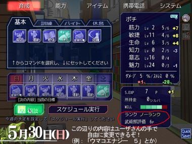

シルバーセカンド開発日誌
2009年09月
■
2009-09-30 (水) WOLF RPGエディター1.14公開▼がんばってウディタリアンという名前を流行らそうとしてますが
一向に流行る気配がなくて寂しいウルフです。
そんなことはともかく、「WOLF RPGエディターVer1.14」を
正式公開しました！
今回の修正についてですが、作り込んでくると地味に困るような、
細かい部分をちょこちょこ改善しました。実のところ、
シル学開発のときに困った部分の修正が主なんですけれど。
【地味な便利機能色々】
・コモンイベントエディタで、C,V,X,Delキーの
操作を一個戻すボタンを追加。
うっかり誤爆して「アッー！！」ってなることが多かったので。
・隠し機能として、ユーザDBやシステムDBを
上書きできるようになりました。
ただしデータをロードし直すと内容は元に戻ってしまいます。
・オートフレームスキップ機能を完全化。高速なPCではなめらかに！
処理の負荷が高くなったときは描画FPSを半減して処理を軽くします。
・データをロードしたとき、可変DBのタイプ設定項目が増えてたら
自動的に項目数を変更します。もっぱら、開発時に
テストプレイを繰り返すときにしか影響しませんけれど、
いちいちニューゲームするのも面倒臭いですしね。
【基本システムにオプション追加】
某ロマンシングサガみたいに、前ターンに選んだコマンドを
そのまま選べる「キー位置保存機能」を追加しました。
【サンプルゲームのファイルを全て英語化】
将来の英語版ウディタ公開を視野に入れた下準備です。
実は昔、勝手にリソース書き換えて中国語版にしているウディタVer1.05を
見つけたことがあります。中国パワー凄いな！と思いました。
ちなみに今のサンプルゲーム、ファイルを英語化したので、現段階でも
文字フォントを「Arial Black」などに設定すると
英語Windowsで動作するようです。
ＭＳ ゴシックのままだと、特定のフォントサイズで表示しようとした瞬間に
強制終了しますのでご注意を（例えばメニュー開こうとすると強制終了）。
以下は気になったコメント返信です。 ▼追記を開く▼＞そういえばウルフさんて独身なんですか? 私は年齢＝(ryですけどorz
私も年齢＝（ryです。創作活動さんと付き合ってもう14年ですが、
どうやらこの人とは結婚できなさそうだと最近気付きました。
＞クイックセーブいいですよね。
＞私も良く使います（プレイヤーとしてですが）。
＞ところでクイックロードは無いのですか？
育成画面につけとくと、うっかりまちがって
押しかねないので導入見送り中です。
そもそもロード必須なゲームデザインに
ならないよう気を付けたいと思います。
＞>私は人間に恋をしたことがありませんが
＞ちょっと待てｗｗ それは人として
＞色々と問題があるんじゃないだろうか？
＞ま、まさか！WOLFさんは実は人外で、人間に対しての恋愛感情は
＞持ち合わせていないんじゃ！！？
いつか化け物と呼ばれる存在になりたいなとは思ったことはありますが、
中身はただの人間です。人間を好きになれるかどうかはまだ分かりません。
やっぱり、どこまでもゲーム作りバカなんだと思います。
＞遅レスですが、習得しにくい技はイベントでの調整も大歓迎ですが、
＞ある期間までに特定のパラメータを一定のレベル以上、または
＞一定のレベル以下だと習得とかでも、面白いかもしれませんね。
アドバイスありがとうございます！
なるほど、複数の習得方法を用意するのは面白そうですね。■
2009-09-27 (日) シル学に全力投球中▼もの凄い勢いで前回の修正項目を次々修正中です。
その脇でついでにウディタVer1.14テスト版も現在調整中ですので、
気になる方はどうぞ。シル学を作ってて「ムキー！！」ってなったところを
解消するために、非常に地味な部分ばっかり直しておきました。
しばらくは地味な修正が続きそうです。
【シルフェイド学院物語ブースト中】
にしてもシル学絶好調ですよ！やっぱりこの感情ですよ、この感情！
「これじゃ面白くないなあ」って思ってたシルフェイド学院物語に対して
具体的かつ効果的な改善点が見つかって、
「磨けば凄い人になるであろう素質ある人物」を見つけたような、
または「一生そいとげられそうな人」を見つけたかのような、
謎の期待感が生まれて元気ハツラツ、全力投球状態になっています！
私は人間に恋をしたことがありませんが、恋をすると
きっとこんな気持ちになるのかもしれませんね。
とにもかくにも、この気持ちがないと開発がはじまりません！
逆に言うと、自分の作りかけのゲームが
好きじゃないことほど辛いことはありません。
で、結局のところ、システムを削りに削った結果、
ほぼそのまま幻想譚を踏襲した形になりました。
一個前のスクリーンショットと比べると、
ちょっと変わったのがお分かりになるかと思います。

ステータス欄で自由に設定できる部分が4行分くらい余ったので、
ユーザさんの手で自由に設定できるようにしておきました。
今は「ランク」表示や「評価ポイント」の表示をしています。
また、右に表示されている太字の黄色や青の±の数値は、
直前の一週間で増減した合計値を表しています。
これで先の見通しが立てやすくなるという寸法。
あと何ターンでどうなるかくらいは、分かりやすい方がいいですものね。
あ、あと一番右下に
「クイックセーブ（今使用中のセーブデータに上書きする）」
のボタンを付けておきました。実に地味な修正ですが、
これでテストプレイの効率も上がるってもんです。
自分のゲームってなかなかテストが億劫になりがちですが、
テストプレイを繰り返すと、プレイしやすさを上げるための工夫を
せざるを得なくなってくるので、
ゲームを良くするには絶対お勧めですよ、
テストプレイ祭り。
【お絵かきイラスト集】
それと本日、皆さまからいただいた
お絵かきBBSイラスト集をアップしました！
皆さまからのアツいイラスト、いつも本当にありがとうございます！
励みになります！
クリックするとお絵かきイラスト集 Vol.16を新ウィンドウで開きます
以下は余談いろいろ。 ▼追記を開く▼【宇宙的余談】
そういえばすっかりHTVの話を忘れてました！
最近ニュースにも出てましたが、
HTVとは、国際宇宙ステーションへの補給用ポッドのことですね。
それを宇宙まで運んだHII-Bロケットの性能も凄いのですが、
HTV自身もかなり凄いブツなんですよ！
自動制御機能積んでるし与圧部もあるし。
NASAから1300枚分のケチ付けられたけど全然問題なかったぜ！
とかJAXAの人マジ凄い、凄すぎる。
そしてこの格闘ビデオのような熱い公式PV。
JAXAの中の人のプロモ作り技術は、地味に凄い気がします。
こと宇宙分野に関しては、日本の技術力がキラリと光ってますよね。
ISSの「きぼう」の入口に、のれんが付いてたのがちょっと笑えました。
以下は気になったコメントへの返信です。
＞イベントがカットされるのが勿体ないです！！（その他多数）
ああ、誤解を招く言い方をしてしまって申し訳ございません！
カットされるのはほとんどなくて、もっぱら圧縮です。
作ってない分は作らなくて済むし、
作った分は流用したいと思っています。
何より、例のウリユイベントはまだ作ってません。
そして年に一回だった合宿イベントは年に3回になります。ちょっと多い。
そしてちゃんと流用された結果、
なぜか11月頃に卒業（※中退）していくナダ先輩。
「ナダ先輩、卒業おめでとうございます！」
ナダ「あ、はい、ありがとうございます……」
のセリフが全然違う意味に聞こえて来ます。ある意味卒業だけど。
＞ウリユの子供じゃないイベント削除に泣いた野郎の数なんて、
＞日本野鳥の会でも数え切れませんよ…
ウリユの「子供じゃない」イベント削除に泣いた人たちが西の空へ向かって
飛んでいっている図が浮かびました。とりあえずウリユが14歳でも
「私……もう子供じゃないよ」とか言ってOKだと思います！
ウリユは中等部だけど思いっきり
考古学部あたりに顔突っ込んでくるかもしれません。
＞短くすると不満の声が高まるのでは？
たぶんそうだと思います。
ただ、終わったときに「あー疲れた……」っていうゲームと、
「え、もう終わったの！？まだやりたい！」と思えるゲームがあったら、
私は徹底的に後者を押し進めたいと思っています。
そしてまた、8時間分のシナリオを最後までプレイしてもらって
「もっとやりたい！」と（少なくとも私自身が）思えるゲームを作るのは、
私の今の能力と時間では難しいと判断したのもあります。
時間のない学生さんや、社会人の皆さんに、濃密な娯楽の時間を。
常にこれをテーマにしていきたいと思っています。
＞バランス等開発が大変になるでしょうが頑張って下さい。
＞そう言えば、パラメーター改造（チート）については賛成派？反対派？
＞とある同人ゲームでは反対派らしく、えげつないチート対策してあります
それどころかシル学は開発に必要な全機能が
プレイヤーさんにも開放されておりますので、
MOD機能でゲーム始まった瞬間に全レベル100にするとか余裕です。
バランス調整パッチなども大歓迎です。
スカッと遊びたい人はスカッと遊んでもらえばいいんですよ。
そういう意味では、バイキング形式のゲームが好みです。■
2009-09-23 (水) スーパーダイナミック改革▼シルフェイド学院物語を
フリゲ開発者さん（というかウディコン審査員）の
皆さんに直接見ていただいてレビュー・改善案・その他を
募ってみたのですが、
ズバッとよくなりそうな案を山ほどいただいてしまったので
しばらくまた修正に走り回れそうです。
大きな修正点は以下の2点で、
【Ａ．３年のシナリオを１年分に圧縮】
これは、実際に他人にやってもらったときのプレイ時間が
予想外に長かったことに起因しています。
ゲーム内時間の1ヶ月辺り、プレイ時間が14～15分くらいになったので、
このペースで3年やるとプレイ時間が8～9時間！！
いくらなんでも長いよ！！まだ他に2種類もシナリオあるのに！
ということでストーリーを圧縮して一年の物語にすることにしました。
2年目専用、3年目専用のシナリオはボツらざるを得ないのが残念ですが
ストックリストに放り込んで別のイベントに流用する計画でいます。
先輩イベントと後輩イベントがなくなったのと、あとウリユ（初期14歳）が
17歳になって、「私……もう子供じゃないんだよ」とか言うイベントは
残念ながらなくなってしまいました。
ショートストーリーで補完してください。
あと、1年版の何がいいって、
「毎月変わるイベントが気軽に作れる」ところ。
36ヶ月分のパターン作るのはさすがに億劫でやれなくとも、
12ヶ月分のパターンだったら割と気軽に作ることができます。
密度を超ギュウギュウにして何度でもお楽しみいただける仕様の予定です。
【Ｂ．経験値のパラメータ全部カット】

心・技・体・？という経験値パラメータが存在していたのですが、
ややこしい＆プレイヤーさんが制御できないので、
撤去してS.EXPに一本化することにしました。
「習得しにくいスキルを得るために試行錯誤する」という表現は、
イベント側で色々準備することになりそうです。
神業クラスの技を教えてもらうには秘伝の書一本がいるとか。
この辺のバランス調整を再調整する時間が必要になりそうですが
むしろS.EXPに一本化されたおかげで調整やりやすくなったと思います。
そしてプレイヤーさんもS.EXPの使い所に
頭をひねっていただけることと思います。
以上。どちらも、
自分一人では絶対にやらなかったであろう「削るべき部分」です。
人に言われないと、なかなかカット作業って踏み切れませんよね。
昔は人に言われても内容のカットなんて信じられませんでしたけれど。
でもいまは、「余分なものがあるせいで面白さが下がる」ということを
身に染みて理解できたところまで来た気がしているので、
割とあっさり受け入れることができた気がします。
どんな変更でも、ただこれだけは言えます。
これらの修正で、面白さは絶対に向上しますので、ご安心下さい！！
そうじゃなきゃ私だって受け入れませんよ。
モヤモヤしてるところに指摘をいただけて助かってます。
にしてもゲーム作ったことのある人に指摘してもらえると、
あっさり的確に「あ、それ面白くなりそう」って意見を
言っていただけるので、ものすごく助かります。
「シル学これひょっとしてつまんないんじゃないのか……」と悩んで
いまいちやる気が低下していた部分があったのですが、
今回の件で光が見えました。
「面白くないけど何を足せばいいんだろ？」
って発想ばかりに目がいっちゃってて、
上のような削る方の改善案に辿り着けなかったんですよね。
え？カットしてもいいけどウリユのイベントだけは入れろって？
以下は拍手コメント返信です。 ▼追記を開く▼＞魔界王伝の作者さん、チェーンソーゴッデスを
＞形にしてらっしゃるｗｗｗｗｗｗ
http://oden.zashiki.com/（2009.9.20の記事/ｱｰｶｲﾌﾞ）
う、うわあああ、ってデザインが素晴らしい！
元イメージとは大違いの美しさ！
↓
元イメージ

＞あ、そういえばこれもボイン記事ですね。
あ。
＞緑の肌……オヤジンジャーグリーンも精製可能なんですね!!
オッケェェェイ！！ただしずっと緑色。
＞今頃ですがウディコンお疲れ様です。
＞ウディコンへの意見なんですが、結果発表するときに
＞順位以外に「ストーリー賞」や「システム賞」といった
＞ものを授賞したらどうでしょうか？
いいですね！ ホントはもっといっぱい賞を考えていたのですが、
今回は運営に手一杯で他に何もできなかったので、
次回は色々考えたいと思います。
＞フェザーで治癒か完治毎ターン使って
＞迎撃使えば絶対死なないんじゃね！？ 案
迎撃が発動するのは確か物理攻撃に対してのみだったので、
本当の強敵であるラスボスや魔王相手（理力が主力の敵）だと
火力不足なのが難点です。
ちなみに意志マックスで幻霧を使うと
回避率ほぼ100％を叩き出せるので（スケイルなら完全に100％）、
物理攻撃してくる相手には一方的に攻撃できてしまいます。
でもそこまで戦略思いつく人だったらクリアでいいよなあ、
って思ってたくらいのＲＰＧ初めての人用養成ツール的な
立ち位置なのでそんなもんなのです。
シルフェイド幻想譚の敵の物理攻撃って軽いですよね。回避も強いし。 ■
2009-09-18 (金) シル学 武術部テスト開始▼旅行から帰ってきたら昨日39.1度も熱が出て死ぬかと思ったウルフです。
本日病院で検査してもらったところ、どうもA型インフルエンザの
薄い陽性（治りかけっぽい、とのこと）みたいな感じでした。
ていうかインフルエンザが丸一日半で治ったってアンタ。
若い体はいいなあ！
さていよいよ開発に戻りましたシルフェイド学院物語、続報です。
といっても最近行っていたのは、
テストプレイちょこっとと、それによる修正に備えて、
「イベントの修正をより素早く、無駄な労力を使わずにできる機能」
を追加したくらいなので、
皆さんにお見せするようなものが特にありません。
実に地味な作業ですが、開発においてはどうしても必要な作業です。
ゲーム開発は、いろいろ想像するところまでは面白いんですが、
作る部分の9割は地味ーな作業だと思います。それでいて
その地味な作業にも経験が要求されるので、
ドMの人以外にはおすすめしません。
でも上には上があって、どこまでも
延びしろがあるので異様に面白い分野ではあります。
さて、今回のシルフェイド学院画像ですが、とりあえず
今回はネタがないので透子さんに描いていただいた育成画像を紹介！

エルコート書店にて、本屋のバイトをすることができます。
といっても、レジには例のおじさんが座ってるので、
やることは本の整理＆並べ仕事。知力と筋力がアップします。
ここではシン＆シズナ姉弟も働いているかもしれません。
【余談】
ウディコンやってみて思いましたが、一気にゲーム開発者の人と
いっぱい接触することができたのができたせいか、
ずいぶん妙な元気が出てきました（直接的にも間接的にも、計4＋31名！）。
コミュニケーションを楽しむことも目的で
ゲーム開発を行っておられる人ならともかく、
ゲームを作ることオンリーが最終目的の人たちとは、
お互いなかなか繋がりが
持てませんから、こういうコンテストを開いてみて
本当に良かったと思います。
次回こそ私も何か出したい！
来年はウディコン二ヶ月前くらいから
ちょっと必死に頑張って一本作ってみようかな、
と思っています。今回ほどのクオリティでしたら、
本気でやっても負ける自信がある！！
時間をかけたらいい物は作れますが、
短期間だとほどほどの物しかできません、
その辺は皆さんと同じなんです。
ただ、どんなに時間をかけてでも
最終的なブラッシュアップさえうまくやれれば、
ひょっとすると伝説に残るほどの作品になるかもしれません。
以下は気になった拍手への返信です。 ▼追記を開く▼＞ジウノンテ絵ありがとうございます！次回作はチェーンソーと
＞巨乳キャラ満載にします！（魔界王伝作者のメガネさんより）
この件について審査員のPさんから素敵なイラストをいただいたので
ぜひ参考にしてください。
＞ウディコンお疲れ様でした、結果発表からすぐにバグ報告掲示板が
＞消えてしまったのでとある作者さんの返事待ちをしてたので戸惑いました。
＞が、作者さんのHPがあったので何とか連絡が取れました。
＞掲示板を削除する日程も書いてあればよかったかと思います。
ああー！それは申し訳ございません。
次回からスレッドの1番目に書いておきます！
ご指摘ありがとうございました。
＞最近の記事のボイン度が高いのは気のせいですか？
バニラさん（ウディコン投稿作品3位 SteelRabbitより）が特に大きくなければ
最新4記事中3回もボインということはありませんでした。
偶然です。偶然です！ ■
2009-09-13 (日) 第一回ウディコン感想▼現在ウディコンの最終作業（アップされた作品を別のところにアップし直す）
の真っ最中です。たまには雑務も楽しいなあ。
でも最近ずっと雑務ばかりなのでちょと残念。そろそろ開発戻ります。
WOLF RPGエディターコンテスト 公式サイト

清書しようとも思ったんですけれど、時間的都合であきらめた落書き。
一位「魔界王伝」は、ジウノンテ君etcがまさか駅名ネタだとは思いませんでした。
いつも私が遊びに行ってる場所じゃないか！
メガネさん（一位・魔界王伝の作者様）は本当に
某フリーシナリオRPGが好きなんだなあって感動します。
ちゃんとラスボスもチェーンソーでボコボコにしました。チェーンソー強い！
二位「Final war to invite Freedom」はFPS好きにはズキューンと来ますよね！
アレやコレを2Dにしたらこんな感じになるのかー面白ぇー！って。
三位「SteelRabbit」は私のようなケモナー兼獣人スキー＆緑髪好きに
こんなもの見せないでくださいというくらい直撃弾でしたが、
ちゃんとキャラ以外のところも見てるんですからね！
こんなこと言ってたら次回から個人の趣味狙い打ち作品が増えたりして。
さて、今回は第一回ウディコンで思ったことを色々。
■審査員票の影響が大きすぎる
と思います。今回、実験的に、審査員審査による得点率と
一般投票による得点率を足した値を、総合順位の基準として
定めていたのですが、やっぱり審査員の得点率の影響が強すぎる！
正確には、「一位票や二位票の得点率が大きすぎる」のです。
今回は審査員票の総得点が71点だったので、一位票（5点）の重みは約7％！
「一般投票」の1位の得点率が11％、2位が8％ということを考えると、
これはいくらなんでもデカすぎます。
この問題に関しては、要するに審査員の総計ポイントが増えれば
一票あたりの％が減少してちょうどよくなるため、「審査員の人数を多く」したり、
「持ち票をより多くする（一人当たりの持ち点を増やす）」ことで
ある程度カバーできると思っています。
要するに「一票の得点率％を下げればいい」ってそれだけの話なんですけどね。
「5点1つ、3点2つ、好印象いくつか」制は、
「10～15作品に対して5人で審査する場合」に
だいたい適切な値だと思うので、
これを基準に数値を定めていきたいと思います。
例えば10～15作品あたり[5点1つ、3点2つ、＋α]×5人の
「80＋α」点と考えて、
投稿作品数・審査員数に応じて
持ち票数を変えるシステムにするとちょうどよさそうです。
審査員5人で20～30作品審査なら、5点×2、3点×4にするとか、ですね。
要するに次回はもっと審査員点と一般投票点のバランス取るよ！
ってことです！
■遊びやすい作品の方が強い？
遊びやすさ、とっつきやすさはかなり重要かなと思いました。
たとえばRPGでは、
・次の行き先が示されている。または小さめなマップの一本道で迷わない。
・ただの移動で時間を消耗しにくい構造になっている。
という作品の方が、票が集まりやすい印象でした。
さすがに29作品も集まって、
「さくさく進むゲーム」と「迷いながら進むゲーム」が並んでいれば、
後者はどうしても評価が悪くなってしまうのかもしれません。
私は、「遊ぶ時間は短くていいので、可能な限り『質』が高い方がいい」と
考えるタイプなので、さくさく進む方が好きなんですけれどね。
■タクミさん審査コメントがんばりすぎ。
「得点入れたゲームにコメント書いてね」って言ったにも関わらず
全部の作品にコメント書いてくださったタクミさんはマジ勇者だと思います。
本当は審査員一同、全作品のほとんどに対して
コメントやメモは書いたものの、
それがあまりにドSな内容だったので自重した人がほとんどだったようです。
「好きな作品・好印象以上の作品にだけ票を入れてね」ってのは、
ひどいことしか言えない人でもそれを言わせない、
言わなくてよくするためのシステムでもあるんですよ。
だってほら！ 正直に、「基本システムもう飽きたー！！」
とか言ったらブーイング出まくりじゃないですか！
基本システム作ったの自分ですけど！
飽きない基本システムを作るのは、どんなゲーム作るより難しそうです。
それでも最大限面白くなるよう工夫してくださっている方もいて、
本当に感謝に堪えません。
■基本システムではやや辛い？
上記でもボヤいてますけれど、審査する側もプレイヤーさん側も、
基本システムそのままご利用なさっているゲームを何本も遊ぶと
やや飽きが来てしまうのではないかなと思います。
上位作品の基本システムRPGの中でも、基本システムそのままではなく
何かしらの追加システムや改造が行われてるところは、
密かに加点に結びついているのではないでしょうか。
■運営やってみた 死ぬかと思った
運営＆必要なCGIを組みながらの審査は、身体的には全然しんどくないのに
なぜかどんどん体重が減ったので、さすがにもうあまりやりたくありません。
運営活動にも協力してくださった審査員の皆さまには、本当に頭が上がりません。
とりあえず一日に11本くらいエントリーがあった日は顔が青くなりました！
え、20本で済むはずじゃ……と思ってたのが最終日に1.5倍になりましたからね！
もちろん審査員としてひととおりプレイさせていただきましたとも！
■改善案色々
運営に対する様々な改善案をいただいたり、議論しました！
どんな変更にも良い点、悪い点があるので、審査員の皆さんとも
しっかり検討した上で採用させていただきたいと思います。
受け入れられる作業量や、労力の兼ね合いも含めて。
一例として、参加者の方から、「バグ報告はメールフォームでどうよ？」
（返信の手間の減少や、ひどい書込への対応をしなくていい点を期待して）
という案もいただいたのですが、衆目に触れないことから
余計に誹謗中傷が激しくなる可能性や、我々が何も関知できないまま
こっそり困ったことになっても
対処できない可能性があることが問題として挙がり、
とりあえずはバグ報告BBSに「作者は返信の義務がないこと」を明記して、
あとはBBSは主催側がしっかり管理して、
よろしくない書き込みを削除する権限を
審査員全員に持たせて対処すること、およびバグ報告スレの有無を
エントリー者で設定可能にする事が決定しています。
特に「バグを報告してもらう」という目標においては、
「誰か言ってるだろうからわざわざ言わなくていいや」の心理によって
報告がなくなってしまうことが一番の問題ですから、そういう観点では
BBSの形式の方がより適切だろうという意見もありました。
何にせよ、今回は作品のエントリー作業だけでヒイヒイ言ってたのが、
プログラム化でだいぶラクになったので、次はもっと他のところへ
労力を回せるようになると思います。
■もしかしたらメガネさんあたりを
来年6月あたりの話になると思いますが、今回のウディコン参加者の中から
何人かを、審査員としてスカウトさせていただくかもしれません。
もちろん、ご都合とやる気がよろしければ、
という感じのものなのでご心配なく。
審査員は、面白いんですが、気軽にできるものではないということは
今回でよく分かりましたので。
■容量制限について
は、相変わらず設けませんが、なるべくなら20MB以内が嬉しいです。
特にファイル容量が大きすぎるゲームは、それだけで評価が下がったり
ダウンロードしようと思う人が減ったりするので、投稿前には必ず
余計なファイルを消したり、音声をOGGやMP3形式に変換するなど
してみてください。回線弱い人は30MBでもなかなか落とせないんですよ。
という話題で会議してたらタクミさんがこんなこと言ってました。
タクミ さんの発言:
何とかブルーレイ１枚に収まるように努力してみます
ちょっと容量制限を明記したほうがいい気もしてきました。
以下はいただいた拍手のコメントです。 ▼追記を開く▼＞右のモブ子の肌の色、怖！
右のはネイティブアメリケンなモブ男くんです。
他にも緑色の肌や紫色の肌もあります。竜人用。
＞こ、これはウサミミ主人公も可能ということですね！？
＞右隣の人の、あなたどこの部族の人ですか状態も気になりますけど！
まだ実装できてませんがきっと可能にする予定です。
もしくは装備でウサ耳用意したりするかも？
右の人は「オレ ウソツカナーイ」とか言う人なので間違っていません。
＞右はカンフーの達人的な人ですね、わかります。
＞ところで1キャラ顔10パターンてことは、エシュター得意の
＞伸び顔を全員が常備してるということですか？
＞それはまた・・・すごく・・・カオスです・・・。
右の人の名前はカンフー太郎にするかどうか迷いますね。
伸び顔は合成キャラだと無理ですが口がやたら伸びてる顔は作れます。
＞お疲れ様です!! Vectorでシル見のVer.UPあって
＞驚いたのですが、何が変わったのですか?
ウイルスバスターが入っているとダウンロードできない＆
解凍できないという方がおられましたので、zipファイルに変更しました。
＞ウディコンまだ遊び終わってねぇですよ、投票おわっちまったぁ・・・
ああ、それは残念です。予想以上の作品数だったので、審査員だけでなく
一般ユーザの方々も戸惑われた面も大きいのではないかなと思います。
今回、一般投票にご協力下さった皆さまには、とても感謝しています。
本当にありがとうございました！■
2009-09-08 (火) ウディコンとモブ制作と▼ウディコン一般投票、とうとう締め切り4時間前！
これまで投票してくださった皆さま、本当にありがとうございます！
が、審査員も一般投票してくださった皆さんも、みんながみんな
好きな作品が違いすぎてどうすればいいか分かりません！
一般投票においては、一位票（5点）の数は一番多いんだけど
なぜか順位が3番とか、二位票（3点）が一番多くて
順位が1番といった具合でかなりカオスな結果に。
ということで、9/10の結果発表をお楽しみに！
WOLF RPGエディターコンテスト公式サイト
今回、実際にコンテスト開催してみて思ったのですが、
次回ウディコンの期間は、あと二週間早めようと思います！
やっぱり夏休みパワーは侮れません！
それと、これは未定ですが、一つの思い切った案として
作品募集期間中から投票を開始してしまうシステムのほうが、
一番の盛り上がりどきに投票できて効率的な気もしました。
もちろん後半に作品投稿すると圧倒的に不利ですけれど、集客数的な問題で。
最初の1週間は完全に募集期間、次の1週間は募集しつつ投票開始期間、
最後の1週間は投票のみ受け付け期間、って感じにするほうが
微妙にワクワク感を維持しつつも投票できるという感じで、
いい塩梅になるかもなあ、という気がしてます。
投票期間は変化がなくて、どんどんお客さんが減ってしまいますからね。
で、こちらはシルフェイド学院物語の続報です。

【制服の色が変わりました！】
ということで現在あわてて調整中の合成顔パーツ。
作ってみて分かる、合成顔パーツによる
モブキャラ（メイン以外のキャラ）量産のラクさ！
シル学ではどうでもいいキャラが山ほど必要なので、
今になってみると、効率化のために作ってみて本当に良かったと思います。
パーツ追加ならラクだし、顔グラフィックも
メインキャラだけ描けばいいだけですし。
顔グラフィックを新しく描く場合、
1キャラの表情10パターン＋服装いくつかで
2日くらいかかったりするので、
作業リソースはうまく分配したいところです。
でもあと15人描くつもりならそれだけで30日！？ワーオ！
しかしそれでも、満足いくまでじっくり作りますよ！
ただ、リソース投入してもそんなに効果が上がらないような部分は、
どんどんカットしていきたいと思いますけれど。
最終的には
「よく見たら攻略キャラ（アーサとか）が合成顔グラキャラだった」
なんてことになるかもしれませんが、
なるべく自然に見えるよう頑張りたいと思います。
以下は気になった拍手コメントです。 ▼追記を開く▼＞幻想譚ではシイルの街防衛イベントが一番燃えたので、
＞やっぱりそういうイベントもいくつかほしいなぁ～と思いますよ
こういうご意見を頂けると、よーしいっちょやってみるか！という気になるので
自信になります。単純な賛同の声でも、すごく嬉しいです、ありがとうございます！
＞なんか、ありがちなパターンですが、緊急事態の場合には、
＞トーテムとかが精神と時の部屋みたいなのを用意して、
＞いつもより時間の経過を抑えて訓練できるとかいう救済システムを～
というご意見を複数頂きました、ありがとうございます！
なるほど、そういうのもありですね。とりあえず当面は、
そういう事態になったらスキル変更と武装変更ができる程度で
対応しようかなと思っています。
よく考えたら、少し訓練したくらいじゃどうにもならないシステムでした、トホホ。
結局は幻想譚でも、最初から準備するくらいの勢いじゃないと
シイル戦の魔王さんには勝てませんよね。
＞ウディタは某社から訴えられないんですか！？
基本的にほとんど無視されてる状態だと思いますが、
言われてみてログあさってみたら、いきなり今日12時頃に
3ヶ月ぶりくらいの某EB社からのアクセスがあってドキドキしてます。
ただ、前にいらしてくださったのは6/17、25の2日で、
それっきり音沙汰なしだったので、企業の立場としては
チェックは入っていないと思うんですよ。
中の人が休憩時間に見てくださってるのかな。
もしツクール部門の方が見ておられるなら、
データベースを自由に組み替えできる何でもツクールが欲しいです！とだけ！
（前回掲載したイラストに対して）
＞３も下がったらマイナスですよ！(犬山家的な意味で)
すでにうちの健全度は2以下ですか！？ ていうか0！？
あとセトさん脱いでないから！ 水着ですからアレ！
＞フェザーと場所を交代したいのですがどうすればいいでしょうか。
想像力があれば空も飛べるよ！レッツ想像！
ってなことをユニバーサルスタジオジャパンでエルモ様が言っておられました。
なんせあのゴマ通りのエルモ様ですからね、信憑性バツグン。
＞○っぱい！おっぱ○！スケイルさんの胸はもっと大きいと妄想してたのに。
水着から溢れそうなサイズでも、なお小さいと申されますか！
個人的には、あんまり大きすぎるのも美しくないと思うんですけれどね。
美しいのが大前提、大きさはその範囲内で。
ゲームも同じです。面白いのが大前提、ボリュームは、その範囲内で。■
2009-09-02 (水) イラスト＆シル学近況▼2061年宇宙の旅を読んだのですが、モノリス（※黒い石版）の
小さい版で「ミニリス」という単語が出ててガッカリしたウルフです。
モノリスフィアのあの人の名前も、ミニリスにしとけばよかったかも。
さて、今週はいよいよウディタコンテスト審査の大詰め真っ最中です。
プレイヤーの方々からすると、あまりに動きがなくて興味の湧かない
シーズンだとは思うのですが、よろしければ一般投票に
ご協力いただけますと幸いです。
え？学校始まって遊んでるヒマないって？
もちろん、その場合は勉学がんばってくださいよ！
【一年に二度描くかどうかの真面目イラスト】

シルフェイド幻想譚よりスケイル＆クロウ＆フェザー。
いまこの瞬間、サイトの健全度が3くらい下がった気がします。
ちなみにこれは、最近のあれこれで配布させていただいたポストカードの画像です。
色々バランスとか気になるのは相変わらずご愛敬。
顔グラフィックだけは死ぬほどいっぱい描いてますけど、
それ以外はてんでダメです。そのうち絵も練習したいと思いつつ、
そのたびにゲーム作りに投じてしまう自由時間。
それと、シルフェイド学院物語もぼちぼち開発再開しています。
今は、すでに叩き台がだいたい出来上がった武術運動部編の仕上げに
取りかかっています。でも実際やってみると、
全然盛り上がりどころがない気がしてショックを受けます。
いやまあ、幻想譚とかもほとんど盛り上がり所とかありませんけど
せっかくだから頑張ってみたいなって思っただけなんですよ……。
というのも、育成シミュ形式にすると、日にちの経過速度が異常に速くなり、
たとえば「明日敵が攻めてくるから対抗しよう！」とか言った場合、
一日じゃまったく準備ができなくてどうにもならないという問題があります。
よってゲームの都合上、準備期間を持たせないとマズいわけですが、
そうすると物語のスピードがかなり緩慢になってしまい、
これまた緊急事態っぽい匂いを出しにくい展開になってしまいます。
その辺のバランス取りが難しいな！と思いながら色々考えてる最中です。
一方、幻想譚はプレイヤーさんの
知らない間に物事が終わってることが多いので
緊急事態イベントをいっぱい置くと全然解決できないまま終わって
プレイヤーさんがどんどん憂鬱になるので、ほとんど入れられていません。
シイルの街防衛戦とか、かなりギリギリの決断でしたよ。
気付かない人いっぱいいるはず。
どちらにせよ武術運動部は、純粋に鍛えることだけに
重点を置いたシナリオという位置づけにする予定です。
育成のチュートリアル的な。
物語は、作者もプレイヤーさんもこなれてきているであろう
公安委員会編や地歴探求編でお楽しみあれ！
一通り「武術運動部編」をこなして開発における問題点を洗い出したら、
公安委員会編や地歴探求編でそれに対処できるよう努力するつもりです。
新しいことをやれば常に問題が噴出し続けるのが当然、
常に学習し続けて、より良いものを生み出していきたいと思います。
以下は気になる拍手コメントへの返信です。
いつもコメントを下さって、皆さま本当にありがとうございます。 ▼追記を開く▼＞ウィンディって誰ですか？
合成顔パーツで作ったモブキャラです！ シル学の新規キャラ！
＞ふとした疑問。モノリスさん達(女神)にはリスくんの様な性的な行動や言動が
＞理解出来るんですかね？それっぽい事は劇中で言ってますが、そもそも
＞住人にはある、雌雄の区別(男の神)や概念とかあるのか、そういった行為の
＞意味を理解してるのかとか、何と無く疑問に感じました。
女神モノリスは普通に理解してますが（というか生物を作ったのが女神ですから）、
「下級生物だけあって交尾しないと子供が産めないとか不便ですわね」
とか思ってます。女神はスフィアから産まれてスフィアに戻りますから、
性別の概念というのがそもそもないと思いますよ。
妖精みたいなもので、普通の人間とは違う気がします。
＞一括ダウンロードしたよ！自宅の警備をしつつ遊んでみるよ！
＞そういえば、ウディタのゲームにサウンド調整は付けれないの？
＞マイPCがアホなので、音量1にてしても爆音で困る！（笑）
＞これだからdellはｗｗｗ
ウディコン作品のダウンロード＆プレイありがとうございます！
私もDELLなんですが、サウンドの調整で「マスターボリューム」だけでなく
「Wave」の方も下げておかないと、音量が大きすぎる気がしています。
ウディタの方でサウンド調整機能も付けられるのは付けられますが、
付くかどうかはゲーム開発者さん次第！
＞ついにウディタがCMデビューですか！
＞コンテストも開かれたりで引っ張りだこですね。
WOLF RPGエディターは、教材からCM用から
あんなことやこーんなことまで、どんな用途にもご利用頂けます！
でもCMに使うって斬新すぎますよね、一体誰がオッケー出したのか！
利用規約をおおざっぱに書いておいたら
大変なことになったでござるの巻です。
＞『銀エルフ＆リス』は伺かでつくったのでしょうか？
＞ファイルが残ってたら見てみたいです。
はい、「伺か」で作ったのですが、今はもうファイルがありません。
どなたかお持ちでしたらどこかに
アップロードしてくださいますと嬉しいです。
でも7～8年くらい前の話じゃなかったかな。
＞1500万ヒットおめでとうございます！
はい、本当にありがとうございます！
お絵かき掲示板にも1500万ヒット記念イラストを
投稿してくださった方々がたくさんいて、本当に感謝の限りです！
これもいつも来てくださる皆さまのおかげです。
今後とも、皆さまの言葉を糧に頑張らせていただきたいと思います！2009年09月
Copyright © SmokingWOLF / Silver Second
 カテゴリ: ウディタ
カテゴリ: ウディタ カテゴリ: ウディタ
カテゴリ: ウディタ